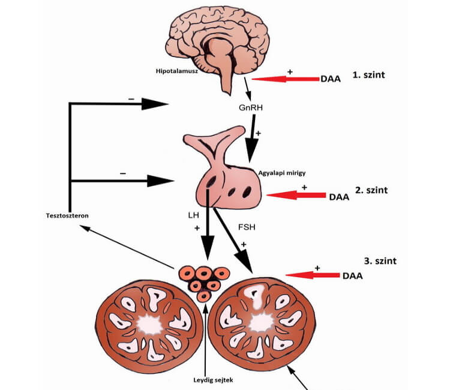

"Health Portal" - az egészségügyi portál. Kérjen tanácsot a szakemberektől online!
PROSZTATAGYULLADÁS TERÁPIÁJA 1 KÚRA ALATT,
ÉLETKORTÓL FÜGGETLENÜL
Interjút készítettünk Jonas Moser urológus szakemberrel, aki megosztotta velünk a KRÓNIKUS
PROSZTATAGYULLADÁS, A PROSZTATA ADENÓMA LEKÜZDÉSÉNEK ÉS A POTENCIA VISSZAÁLLíTÁSÁNAK módszerét.
A férfi erő és egészség nevű magánalap elindított egy programot a prosztatagyulladás és az erektilis
diszfunkció leküzdése érdekében! A program keretein belül lehetőség van arra, hogy kipróbáljon egy új
módszert az "" készítménnyel,
amely 50%-os
kedvezménnyel megvásárolható.
Jonas Mosert kértük meg, hogy meséljen az új készítményről, melynek a neve "".
"Ez volt urológiai központunk legnehezebb, de legfontosabb fejlesztése."
JONAS MOSER Az egyik osztrák vezető egészségügyi központ
urológus szakembere,
a Ferfi erő és egészség nevű alap társalapítója és vezetője, számos külföldi tudományos társaság
elismert tagja.
Riporter: Jonas, volna szíves ismertetni velünk a prosztata megbetegedések és a
csökkent potencia okait, és hogy hogyan lehet megállítani ezt a folyamatot?
Jonas Moser: Minden individuum legfontosabb feladata az utódnemzés. Egy ember
szervezetében minden biztosított ahhoz, hogy ez a folyamat fennakadás nélkül zajlódjon le. Minden
férfi életében feltételesen szólva 3 időszak van. Amikor növekszik, amikor képes "szaporodni" és
amikor öregszik a teste. Azt, hogy jelenleg melyik időszakát éli egy férfi, a szervezet a vér
tesztoszteronszintjéből tudja. A szaporodás korszakában a legmagasabb – több, mint 11 nmol/l. 45 éves
kor után, a kor előrehaladtával a férfi átlép a harmadik időszakba. Ennek így kell zajlania normális
körülmények között – ez valójában egy természetes folyamat. Idősebb korban a férfiak kevésbé aktív
életet élnek, ritkábban élnek nemi életet, aminek eredményeként stagnálás alakulhat ki a prosztata
mirigyben és krónikus prosztatagyulladás alakul ki.
Emellett a tesztoszteron szint idő előtt és rendellenesen kezd csökkenni. 30 éves kor után az
általunk vizsgált férfiak 93%-ában ez a szint átlagosan 5 nmol/l, ami kétszer alacsonyabb a
normálnál!
Ez általában problémákat okoz a potenciával, és akkor azok a megbetegedések, amelyeket a kismedence
szervek normál vérellátásának hiánya idéz elő, sokkal korábban jelentkeznek.
Riporter: Hogyan segíthet az "" a férfiaknak?
Jonas Moser: Fontos megérteni, hogy az "" nem egy potencianövelő készítmény.
Két fő
hatása van. Először is, segít aktiválni a tesztoszteron termelését, nem pedig egyszerűen tágítja az
ereket az ágyékban úgy, hogy ez már viszonylag veszélyes következményekkel járhat a keringési
rendszerre. Másodszor, jótékony hatással van a prosztata működésének normalizálására.
Az hatóanyagai hozzájárulnak a luteinizáló és a tüszõket stimuláló hormonok aktív
termeléséhez, amelyek viszont befolyásolják az agyalapi mirigyet. És az agyalapi mirigy már hozzájárul
a tesztoszteron hormon termeléséhez.
Az "" komplex jó hatással van a
testre. Nem akarok
részletesebben belefolyni a testben zajló kémiai
reakciókba, mivel kevesen értenék meg. Csak azt szeretném megjegyezni, hogy az "" segít a
prosztatagyulladás esetén, valamint hozzájárul az erekció erősítéséhez közvetlenül szedés után. Az
agyalapi mirigy és a prosztata funkciója általában természetes módon helyreáll, és ennek eredményeként
normalizálódik a működése, bármilyen kiegészítő készítmény nélkül. Beleértve az 50-60 év feletti
férfiakat. Az "" segít a stabil potencia fenntartásában még a változókort követően is.
Maga a tesztoszteron rendkívül hasznos a férfiak számára, mert éppen a hiánya gyakran vezet a test
öregedéséhez és a különféle betegségek kialakulásához. Gyakran az 50 év feletti férfiak számára
""-t ajánlanak.

A tesztoszteron Leydig-sejtekben termelődik. Ennek a férfi hormon mennyiségét az
agyalapi mirigy
kontrollálja. És ezt a folyamatot az "" segít normalizálni.
Riporter: A tesztoszterontermelés normalizálása egy nagyon egyszerű megoldás, nemde? A
tudósok miért eddig nem beszéltek erről?
Jonas Moser: A megoldás egyszerű. Ugyanakkor hatni erre a folyamatra nem olyan
egyszerű. Azt az anyagot, amely közvetetten befolyásolhatja az agyalapi mirigyet, nemrég fedezték fel
kutatóink. Ez idő alatt mi pedig létrehoztunk egy formulát. Ma az "" az
egyik olyan készítmény, amely segít harcolni a férfiak szexuális impotenciája ellen. Szintén
fontos, hogy azok, akik már kipróbálták a terméket, beszámoltak arról, hogy a készítménynek általában
nincsenek mellékhatásai, ami viszont előfordul a sildenafil-tartalmú szerek szedése esetén.
Jonas Moser: Mivel az "" a fejlesztésünk, a Férfi erő és
egészség nevű
alap elindított egy programot, amelynek keretein belül a kúra 50%-os kedvezménnyel elérhető.
Véleményem szerint ez egy nagyon fontos és helyes kezdeményezés, mivel a prosztatagyulladás és a
potenciát érintő problémák egyre gyakrabban jelentkeznek a férfiaknál, ez pedig sok esetben családok
széteséséhez és az egészség romlásához vezet. Úgy vélem, ez a készítmény sok családot képes
megmenteni, valamint lecsökkenteni azon férfiak számát, akik olyan potencianövelő szereket használnak,
amelyek köztudottan több kárral jár, mint haszonnal.
Riporter: Hogyan lehet megszerezni ezt a terméket a program keretein belül? Mi
szükséges ehhez?
Jonas Moser: Nagyon egyszerű! 1. Az ország területén kell lennie. 2. Le kell adnia a
rendelést. 3. A megrendelővel a központból kapcsolatban fog lépni egy szakértő, aki
elmondja, hogyan kell helyesen használni a terméket.
A szerkesztőségtől:
Figyelem!
AZ UTOLSÓ NAP AZ ""megrendelésére! Ezt követően a terméket kizárólag kereskedelmi áron lehet
megvásárolni!
A Jonas Moser által bemutatott termék 50%-os kedvezménnyel beszerezhető egy hónapon keresztül,
kizárólag
és között.
"" megrendelése a hivatalos
weboldalon.
Köszönöm, érdekes. Hasonló problémák nálam egyre gyakrabban
jelentkeznek. Megrendeltem az . Remélem, segíteni fog.
35 perce
Dózsa Mihály
Egyébként egy héttel ezelőtt írta fel nekem ezt a terméket az egyik
szakrember :) Egy héttel ezelőtt voltam nála, és elmondta, hogy valami európai konferencián
volt,
ahol sokat beszéltek az ről, és egyébként ismeri Jonas Mosert is, és azt mondja, nagy
tiszteletben álló szakember, és nem kockáztatná a hírnevét hülyeségek miatt. Szóval örülök, hogy
nem maradtam le a programról, már megrendeltem és most várok. Remélem, segíteni fog.
1 órája
Csorba Antal
Jó készítmény, sőt megéri az árát.
1 órája
Ecsedi Norbert
Én vagyok az egyike azoknak, akiknek már volt alkalma letesztelni az
.
Tényleg sokat segít. A potencia szó szerint 10 perccel a bevétel után jelenik meg. De ami a
legjobban tetszett, hogy halmozott hatása van. Már kezd megjelenni a reggeli erekció, amire már
nagyon rég nem volt példa. Én javaslom a használatát, főleg ilyen áron.
1 órája
Szakállas Pál
A termék segít, magamon teszteltem! Krónikus prosztatagyulladásom
van,
évente többször elvégzem a kúrát. Sokba kerül. Két hónappal ezelőtt megrendeltem -t
(ráadásul akciósan), és 4 hét alatt sikerült enyhíteni a gyulladást a prosztatámban, a
fehérvérsejtek szintje leesett a normál értékre. Már nem kell gyakran rohangálnom a WC-re,
bátran
állíthatom, hogy segített és még jó pénzt is spóroltam.
1 órája
Dózsa Mária
Az én férjemnek is kell ilyen. Az utóbbi 2 évben meg tudom számolni a
kezemen, hányszor szexeltünk. Mindez a prosztata problémái miatt. Már nem tudom, mit tegyek. Bár
még csak 49 éves. Ismerek olyan férfiakat, akik az 60-70 évesen is tudnak szeretkezni.
2 órája
Mészáros Károly
Tegnap megrendeltem. Úgy döntöttem, hogy itt az idő, hogy
foglalkozzak
az egészségemmel. Ezt a készítményt az ismerős szakemberem ajánlotta.
2 órája
Sipos Máté
Elolvastam a termék részleteit, majd megrendeltem a hivatalos oldalon.
Meglátjuk, hogy fog segíteni!
3 órája
Nagy Viktor
Teljesen egyetértek! Az "" egy kiváló készítmény. 3 évig
gondjaim voltak a potenciámmal. Mostanában nagyon ritkán állt fel a farkam, a feleségem el akart
válni. De a végén, minden rendeződött, a potenciám helyrejött. Most már normálisan feláll, és
akkor, amikor ezt akarom!
Csüri György
Már 3 hete szedem a terméket + tornázok. Elmondhatom, hogy segít,
megszabadultam a prosztatagyulladástól és a potenciám is sokkal jobb. Korábban kipróbáltam
mindenféle potencianövelő készítményt, fizioterápiát, és állíthatom, hogy mindez sokkal tovább
tartott és sokkal rosszabb hatást mutatott, a különbség tényleg hatalmas!
3 órája
Lőrincz Sándor
A barátom az egészségügyben dolgozik, tőle hallottam erről a
programról, és azt mondja, minden tiszta. Ezért nyugodtan lehet rendelni, amíg él a program.
3 órája
Tiberi Ádám
Köszönöm! Néztem egy műsort a férfiak egészségéről. Ott is ezekről az
új kapszulákról beszéltek. Sok urológus szakember ajánlotta.
3 órája
Gerő Olga
Elolvastuk a férjemmel a hozzászólásokat, és úgy döntöttünk,
megrendeljük. Leadtam a rendelést. Nagyon jó, hogy a menedzser válaszolt minden kérdésünkre.
3 órája
Szilágyi Péter
Megrendeltem! Köszönöm!
4 órája
Szűcs Artúr
Megrendeltem. Az ár valóban 2-szer alacsonyabb.
4 órája
Pintér Rudi
Férfiak, sportoljatok többet, és nem lesz szükségetek mindenféle
újdivatú termékre!
4 órája
Meggyesi Laura
Nagyon szépen köszönöm a hivatkozást. A férjemet nagyon gyötri az a
tény, hogy nem tud kielégíteni engem. Emiatt csökkent az önbecsülése, és nyafogós lett. Nagyon
szeretem a férjemet, odaadnám érte az életemet. De nem tudom, hogyan segíthetnék neki. Olvastam
erről az új készítményról és megrendeltem! Minden reményem ezekben van.
5 órája
Petei Anna
Megrendeltem a férjemnek. Őt nem tudom rávenni, hogy forduljon
szakemberhez!
5 órája
Buda Csaba
Most tényleg sok szakember ajánlja ezt a terméket, hála az égnek,
nálam
minden rendben, de a szakemberem azt mondta, nem ártana egy kúra a biztonság kedvéért.